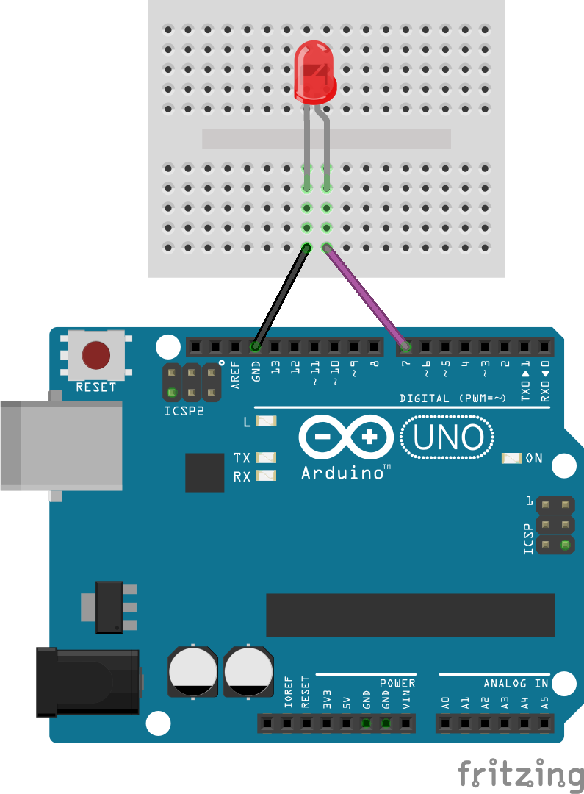
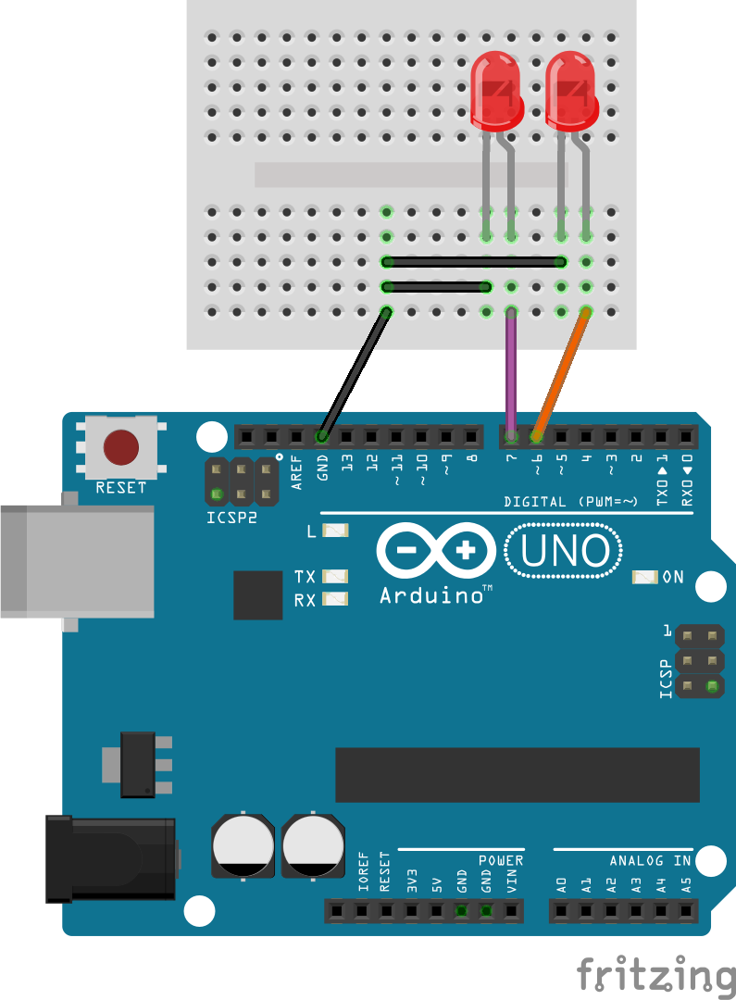
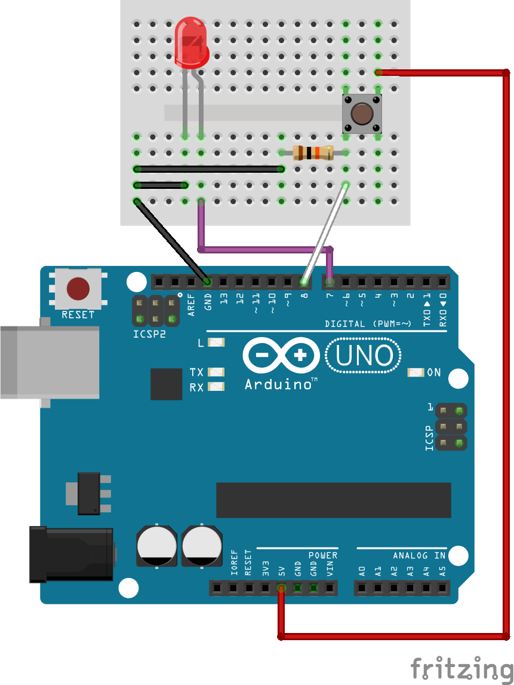

|  |
void setup(){
pinMode(7, OUTPUT); } void loop(){ delay(1000); digitalWrite(7, HIGH); delay(1000); digitalWrite(7, LOW); } |
|  |
void setup(){
pinMode(6, OUTPUT); pinMode(7, OUTPUT); } void loop(){ delay(1000); digitalWrite(6, HIGH); digitalWrite(7, LOW); delay(1000); digitalWrite(6, LOW); digitalWrite(7, HIGH); } |
|  |
void setup(){
pinMode(7, OUTPUT); pinMode(8, INPUT); } void loop(){ if(digitalRead(8) == HIGH){ digitalWrite(7, HIGH); delay(1000); digitalWrite(7, LOW); } } |